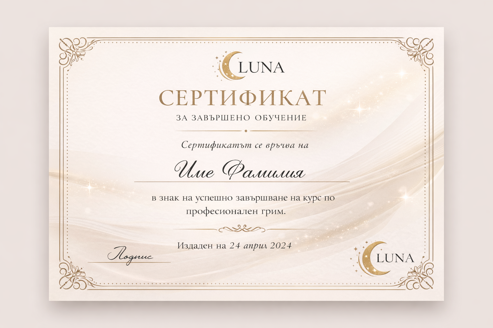

Консултации и обучения
Описание на услугата
Консултациите представляват индивидуална услуга, насочена към определяне на подходящи грим техники, продукти и визии, съобразени с типа кожа, формата на лицето и личните предпочитания на клиента.
Услугата е подходяща както за клиенти, така и за начинаещи гримьори, които желаят да подобрят своите умения и знания.
Какво включва консултацията
- Анализ на типа кожа и лицевите черти
- Препоръки за подходящи продукти и цветове
- Съвети за ежедневен и официален грим
- Отговори на конкретни въпроси на клиента
Обучения
Обученията са предназначени за хора, които желаят да усвоят основни или надграждащи знания в областта на професионалния грим. Провеждат се индивидуално или в малки групи.
- Основи на грима и работа с продукти
- Техники за подчертаване на лицето
- Практически упражнения
- Насоки за професионално развитие
Сертификат за завършено обучение
След успешно завършване на обучението участниците получават сертификат, удостоверяващ придобитите знания и умения в областта на професионалния грим.
